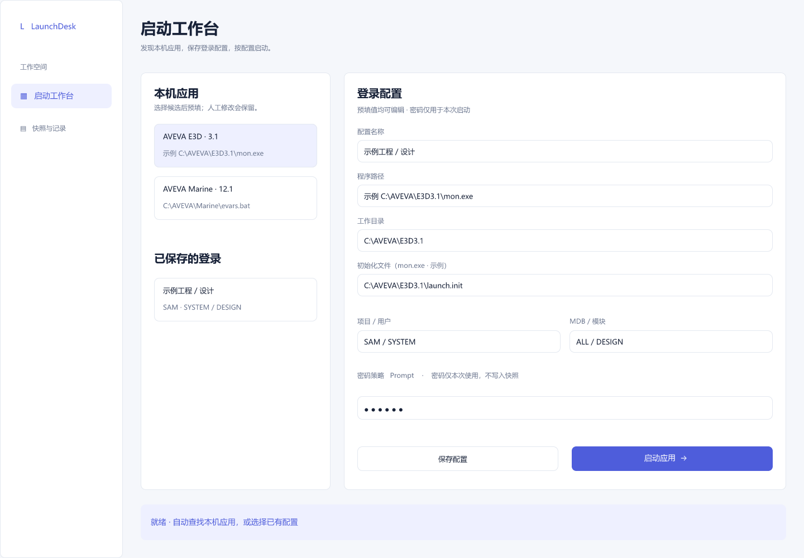

LAUNCHDESK.NEXT / ENGINEERING LIBRARY
界面设计入口
文档站：与作品集同源的DocFX主题，含实际截图、原稿与回写边界；不属于产品WPF界面改动。
新方案：远程工程与凭据FigCraft评审，包括连接、失败、授权、导入、撤销、更新及控件状态。尚未实现WPF，必须按显式模板与实际DPI截图验收。旧工作台原稿保留如下。
下载FigCraft可编辑原稿，查看主工作台预览和状态预览。资源随文档站点复制，可直接下载或查看。



设计原稿是规划依据；实际运行截图、原视觉基线、资源来源与FlaUI交互结果记录在artifacts/frontend/delivery.md。布局差异以实际交付说明记录，不以设计预览代替运行验证。